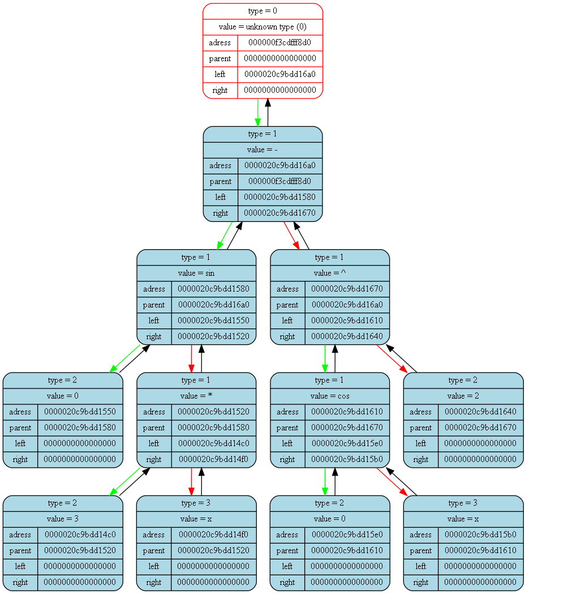
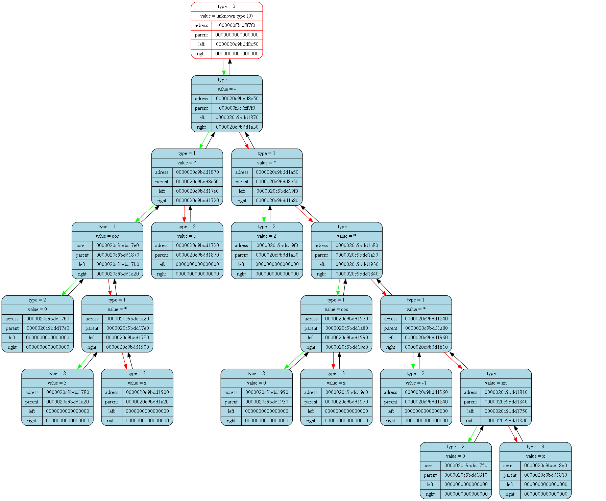
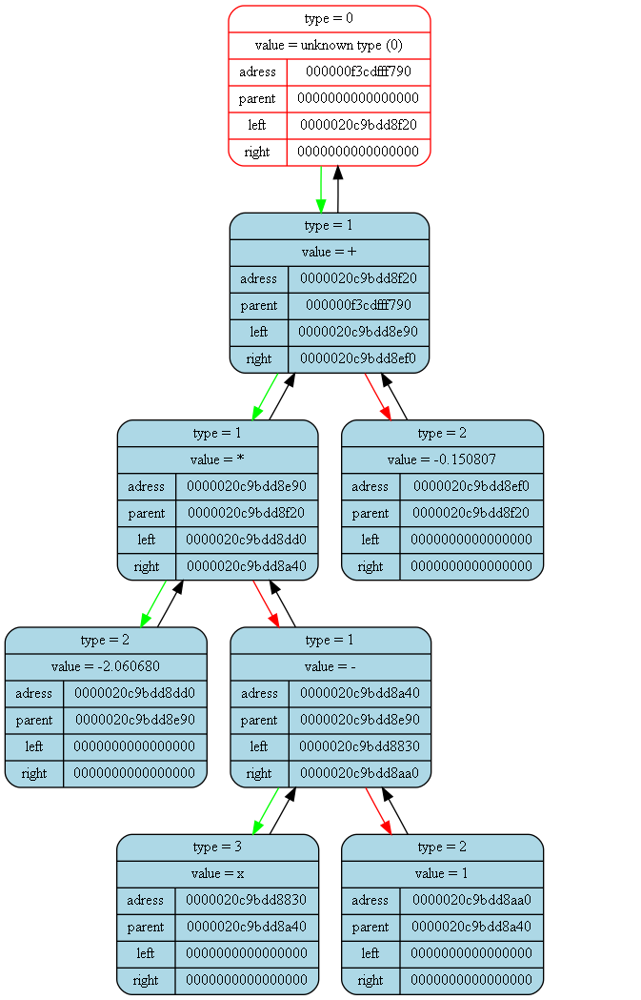
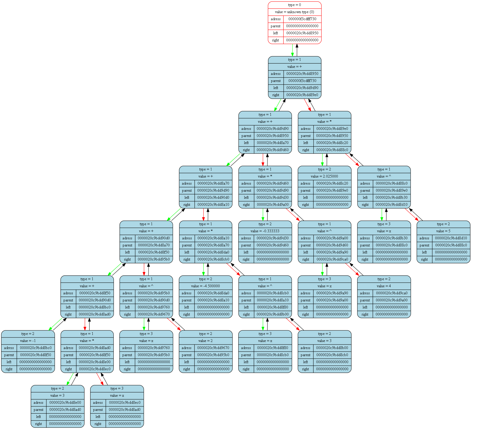

<pre>
<pre>

Tree dump from (int main()) at (main.cpp) at line (18):
tree [000000f3cdfff8a0] "&func_tree" at (int main()) at (main.cpp)(12):
{
	status   = 1
	error    = 0
	size     = 11

	(((0)sin((3)*(x)))-(((0)cos(x))^(2)))
}
<pre>

Tree dump from (int GeneratePdf(Tree_t*, double, int)) at (dif.cpp) at line (86):
tree [000000f3cdfff7c0] "&der_tree" at (int GeneratePdf(Tree_t*, double, int)) at (dif.cpp)(84):
{
	status   = 1
	error    = 0
	size     = 19

	((((0)cos((3)*(x)))*(3))-((2)*(((0)cos(x))*((-1)*((0)sin(x))))))
}
<pre>

Tree dump from (int GeneratePdf(Tree_t*, double, int)) at (dif.cpp) at line (92):
tree [000000f3cdfff760] "&slope_tree" at (int GeneratePdf(Tree_t*, double, int)) at (dif.cpp)(90):
{
	status   = 1
	error    = 0
	size     = 7

	(((-2.060680)*((x)-(1)))+(-0.150807))
}
<pre>

Tree dump from (int GeneratePdf(Tree_t*, double, int)) at (dif.cpp) at line (98):
tree [000000f3cdfff700] "&taylor_tree" at (int GeneratePdf(Tree_t*, double, int)) at (dif.cpp)(96):
{
	status   = 1
	error    = 0
	size     = 27

	((((((-1)+((3)*(x)))+((x)^(2)))+((-4.500000)*((x)^(3))))+((-0.333333)*((x)^(4))))+((2.025000)*((x)^(5))))
}
